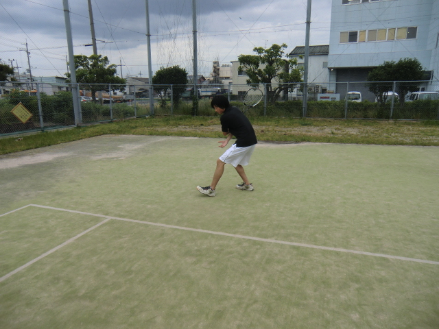
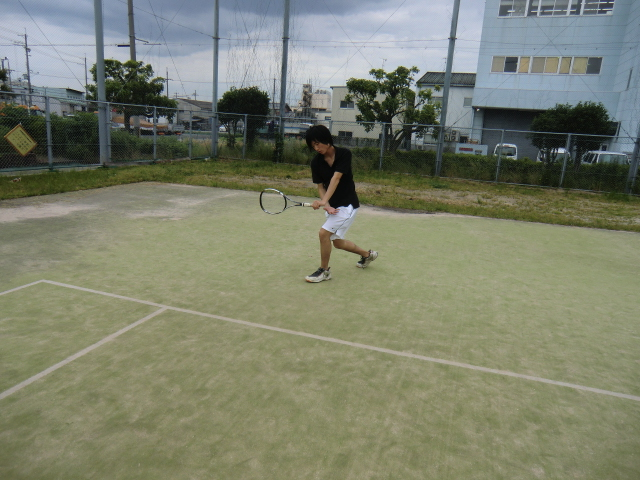
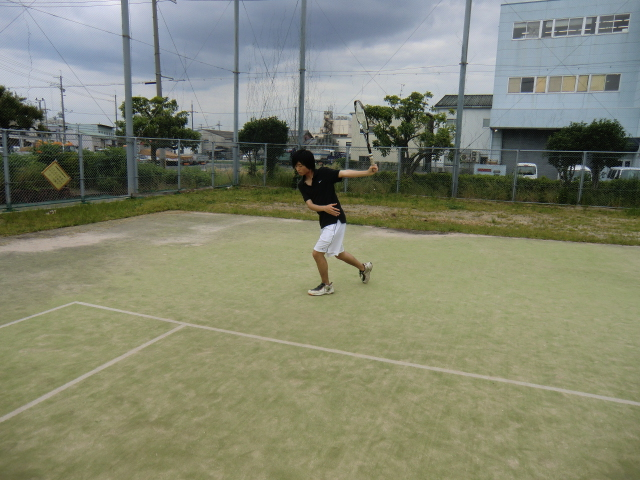

バックハンド・ストローク
バックハンド・ストロークは「持ち方」のところで説明した通り、人によって使い方が様々です。ソフトテニス（軟式テニス）では基本的にウエスタングリップを使うと言われていますが、イースタングリップも見た所けっこういます。一回一回グリップの持ち方を変えるのが面倒な人は、ウエスタングリップでやるようにしましょう！（ちなみに、私はイースタンです）

図１
最初に肩を入れて背中を向けた状態のフォームを作ります。そして、図１のように後ろに体重をのせ、ボールが来るのを待ちます。

図２
次に図１で後ろにかけた体重を一気に前に持っていきます。そして、できるだけコンパクトになるようにラケットを体に近い位置に持ってきます。

図３
最後に図３のような感じで腕をピンとまっすぐに伸ばしながら、ラケットを振り切リます。